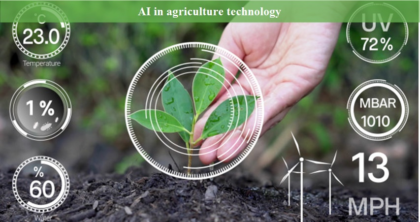

Fundamentally created in the early 1950s, robotics, today, is well-known as a self-operating machine with precisely trained and learned inputs, and its prevalence is omnipresent. The evolution of robotic intelligence shows a wide range of hierarchy since the time it was first created. Introduced to be deployed in factories for industrial use, it isn’t easy to find a sector where robotics is not used today. In the initial days of its advent, robots were merely designed for performing a trained set of repetitive tasks.
Healthcare
AI robotics is increasingly disrupting and transforming the healthcare market. ML-driven robotics is already a massive part of the healthcare chain, including function testing, surgery, research, data integration, etc. AI robotics is widely used to track patients’ health status, form a continuous supply chain of medication and other essentials around the hospital, and design custom health tasks for patients. AI and robotics are aiding the healthcare sector by providing assisting robots, precise diagnosis, and remote treatment. Robots’ proactive analysis allows them to detect minute and complex patterns in a patient’s health graph.
Agriculture
ntegrating AI, ML, and Robotics provide agronomists with useful and actionable insights to help improve their farm productivity. By attaining this information, farmers ensure high yields and low operational costs, thus, stepping towards farm success. The primary fundamental of introducing robotics in farms is cutting down back-breaking labor efforts by automating farm activities like irrigation, seed distribution, pest control, and harvesting; you name it, and you have it. This renders the growers with much more time to focus on productive tasks. Emphasizing a major advantage of robotics of ensuring precision, it helps mitigate wastage of land potential, thus making a place for effective land use.

Automobiles
The role of robotics has a whole network of applications in the automotive industry ranging from designing, supply chain, and production activities to an entire set of management activities. Systems like driver assistance, autonomous driving, and driver risk assistance are being implemented in transportation for automobile industries. The automobile industry has been using robotic intelligence for more than 50 years. The only change from then to now is the advancement of AI and ML in this branch, which is a drastic one.